Exploratory Data Analysis
Adapted for ForestGEO from R for Data Science, by Hadley Wickham and Garrett Grolemund
Mauro Lepore
2017-08-25
Introduction
This vignette literaly reproduces the section Exploratory Data Analysis in R for Data Science, by Hadley Wickham and Garrett Grolemund, except that the examples and some text were changed to more strongly engage ecologysts from ForestGEO.
You will learn how to explore your data systematically, using modern and powerful tools for visualization and transformation. An exploratory data analysis is an iterative process that aims to use data and some research questions to learn something that can help you refine those questions and move forward the learning spiral.
Prerequisites
The data we will use was made public in 2012; it is from census 7 of the forest plot in Barro Colorado Island (hereafter referred to as BCI), in Panama. Those data are available in the data set bci12full7 in the bci data package. Alternatively, you can use the data set bci.full7, in the file bci.full.Rdata31Aug2012.zip at DOI: https://doi.org/10.5479/data.bci.20130603. If you use the later data set, replace bci12full7 by bci.full7 everywhere in this vignette.
Most functions we will use are available in the tidyverse package. If you are new to the tidyverse, you may feel a little frustrated at the beginning, but quickly your effort will pay-off. The tools in the tidyverse are powerful, relatively easy to use and consistent; so once you learn some, you will learn most other tools intuitively. To more completely learn how to do data science with the tidyverse read R for Data Science.
library(bci) # data from BCI (alternative: https://goo.gl/VKbcMz)
library(tidyverse) # visualize and transform data (and more)
#> Loading tidyverse: ggplot2
#> Loading tidyverse: tibble
#> Loading tidyverse: tidyr
#> Loading tidyverse: readr
#> Loading tidyverse: purrr
#> Loading tidyverse: dplyr
#> Conflicts with tidy packages ----------------------------------------------
#> filter(): dplyr, stats
#> lag(): dplyr, statsStyle
Unequivocally identifying where functions come from
Frequently I refer to functions from a particular package as package::fun(). Although the prefix package:: is unnecessary if you previously run library(package), the prefix identifies unequivocally what package the function fun() comes from, and may help you to find that function if you need it (compare ?dplyr::filter versus ?stats::filter).
The tidyverse style guide
I use The tidyverse style guide.
Good coding style is like correct punctuation: you can manage without it, butitsuremakesthingseasiertoread.
Combining multiple operations with the pipe %>%
Often I combine multiple operations with the pipe %>% because it makes the code considerably more readable.
[The pipe] focuses on the transformations, not what’s being transformed, which makes the code easier to read. You can read it as a series of imperative statements: group, then summarise, then filter. As suggested by this reading, a good way to pronounce
%>%when reading code is “then”.
Behind the scenes,
x %>% f(y)turns intof(x, y), andx %>% f(y) %>% g(z)turns intog(f(x, y), z)and so on. You can use the pipe to rewrite multiple operations in a way that you can read left-to-right, top-to-bottom.
Working with the pipe is one of the key criteria for belonging to the tidyverse. The only exception is ggplot2: it was written before the pipe was discovered.
Questions and Definitions
Questions
(From R for Data Science)
To start exploring your data, you can generally ask these questions:
What type of variation occurs within my variables?
What type of covariation occurs between my variables?
Definitions
A variable is a quantity, quality, or property that you can measure.
A value is the state of a variable when you measure it. The value of a variable may change from measurement to measurement.
An observation is a set of measurements made under similar conditions (you usually make all of the measurements in an observation at the same time and on the same object). An observation will contain several values, each associated with a different variable. I’ll sometimes refer to an observation as a data point.
Tabular data is a set of values, each associated with a variable and an observation. Tabular data is tidy if each value is placed in its own “cell”, each variable in its own column, and each observation in its own row.
Variation is the tendency of the values of a variable to change from measurement to measurement.
Variation
Every variable varies with a particular pattern, and that pattern may be insightful. To understand the variation pattern of a variable we can visualize the distribution of the variables’ values. The best way to visualize a variable’s distribution depends on whether the variable is categorical or continuous.
The BCI data has both, categorical and continuous variables. In R, categorical variables are usually stored as character strings (<chr>) or factors (<fctr>), and continuous variables are stored as integers (<int>) or doubles (<dbl>). Let’s overview the BCI data:
head(bci::bci12full7)
#> treeID stemID tag StemTag sp quadrat gx gy MeasureID
#> 1 1 NA -05599 <NA> swars1 4007 800.2 152.2 NA
#> 2 2 NA -22851 <NA> hybapr 0718 151.5 378.8 NA
#> 3 3 NA -24362 <NA> aegipa 0417 95.2 357.5 NA
#> 4 4 NA -26589 <NA> beilpe 0007 11.7 151.1 NA
#> 5 5 NA -26590 <NA> faraoc 0004 7.7 96.2 NA
#> 6 6 NA -26703 <NA> hybapr 0210 50.1 215.4 NA
#> CensusID dbh pom hom ExactDate DFstatus codes nostems date status agb
#> 1 NA NA <NA> NA <NA> dead <NA> NA 18465 D 0
#> 2 NA NA <NA> NA <NA> dead <NA> NA 18329 D 0
#> 3 NA NA <NA> NA <NA> dead <NA> NA 18316 D 0
#> 4 NA NA <NA> NA <NA> dead <NA> NA 18296 D 0
#> 5 NA NA <NA> NA <NA> dead <NA> NA 18289 D 0
#> 6 NA NA <NA> NA <NA> dead <NA> NA 18300 D 0Use tibbles to handle large data sets better and to print more information:
bci12full7 <- tibble::as_tibble(bci12full7)
bci12full7
#> # A tibble: 394,658 x 20
#> treeID stemID tag StemTag sp quadrat gx gy MeasureID
#> * <int> <int> <chr> <chr> <chr> <chr> <dbl> <dbl> <int>
#> 1 1 NA -05599 <NA> swars1 4007 800.2 152.2 NA
#> 2 2 NA -22851 <NA> hybapr 0718 151.5 378.8 NA
#> 3 3 NA -24362 <NA> aegipa 0417 95.2 357.5 NA
#> 4 4 NA -26589 <NA> beilpe 0007 11.7 151.1 NA
#> 5 5 NA -26590 <NA> faraoc 0004 7.7 96.2 NA
#> 6 6 NA -26703 <NA> hybapr 0210 50.1 215.4 NA
#> # ... with 3.947e+05 more rows, and 11 more variables: CensusID <int>,
#> # dbh <dbl>, pom <chr>, hom <dbl>, ExactDate <chr>, DFstatus <chr>,
#> # codes <chr>, nostems <dbl>, date <dbl>, status <chr>, agb <dbl>By default, tibbles print a few rows only; to print more rows use:
print(<YOUR_TIBBLE>, n = <NUMBER_OF_ROWS_TO_PRINT>)
# or print all rows in a tibble with
print_all <- function(x) {
print(x, n = nrow(x))
}
print_all(<YOUR_TIBBLE>)For alternative views try:
as.data.frame(bci12full7) # takes long and doesn't print nicely
View(bci12full7) # prints to a viewer panel
str(bci12full7) # informative and prints nice
dplyr::glimpse(bci12full7) # like str() but shows as much data as possibleVisualizing Distributions
Categorical variables
A variable is categorical if it can only take one of a small set of values.
To examine the distribution of a categorical variable, use a bar chart.
Let’s use a bar chart to explore the variable status:
ggplot2::ggplot(data = bci12full7) +
ggplot2::geom_bar(mapping = aes(x = status))
Values distribution of the categorical variable status.
The categories A, D and M, of the variable status mean alive, dead and missing (data dictionary). To confirm this we can:
- count the the number of unique values of the variables
status; - count the the number of unique values of the variables
DFstatus; - join both counts by the shared variable
n:
# Compare similar code without and with the pipe
# ?magrittr::`%>%` (Ctrl | Command + shift + M)
status_n <- dplyr::count(bci12full7, status)
DFstatus_n <- bci12full7 %>% dplyr::count(DFstatus)
dplyr::full_join(status_n, DFstatus_n)
#> Joining, by = "n"
#> # A tibble: 3 x 3
#> status n DFstatus
#> <chr> <int> <chr>
#> 1 A 221758 alive
#> 2 D 172848 dead
#> 3 M 52 no_recordContinuous Variables
A variable is continuous if it can take any of an infinite set of ordered values.
To examine the distribution of a continuous variable use a histogram.
You should always explore a variety of binwidths when working with histograms, as different binwidths can reveal different patterns.
Let’s use a histogram to explore the variable dbh, which represents the stem diameter, usually at breast height (see description of ViewFullTable variables at the data dictionary). Now we will focus on small trees; big trees will be explored later. And we will try bars of different widths and choose one for further analyses.
small_dbh <- dplyr::filter(bci12full7, dbh < 500)
# Save data and mappings in "p" to reuse them later.
p <- ggplot(data = small_dbh, mapping = aes(x = dbh))
p + geom_histogram(binwidth = 10)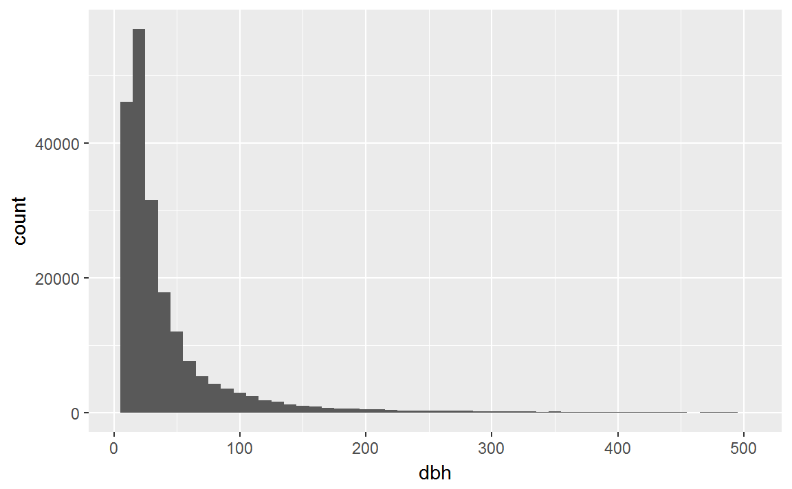
p + geom_histogram(aes(dbh), binwidth = 30)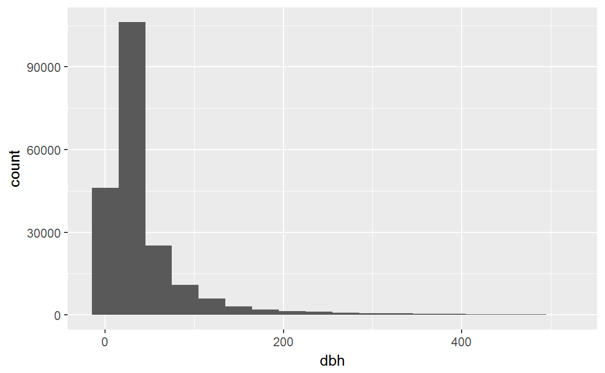
p + geom_histogram(aes(dbh), binwidth = 60)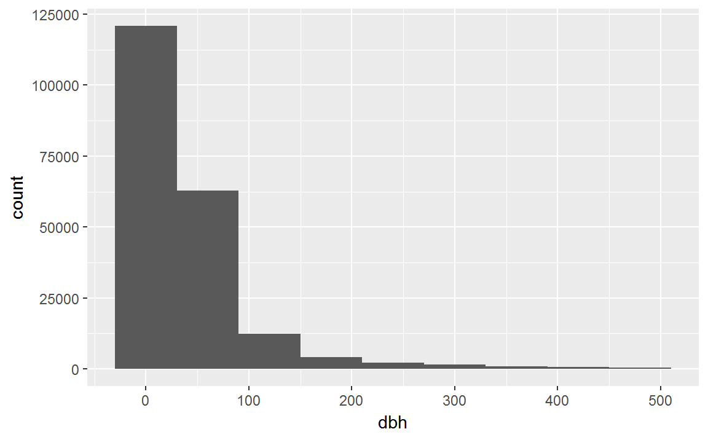
A bar width of 30 dbh seems useful.
# Save to reuse
useful_barwidth <- 30The code above uses the temporary variable p; this reduces the boilerplate code and helps you focus on important changes. Yet this technique must be used carefully. It is good practice to avoid uninformative temporary names like p unless the meaning is obvious from the context and the “life” of the temporary variable is clearly limited to a discrete code chunk. Generally, prefer long informative names over short uninformative ones (http://a.co/4f8df29).
Alternatively, you can reduce the boilerplate code even further and without temporary variables by:
- writing a custom function with an argument to vary binwidth;
- using
purrr::map()(in the tidyverse) orlapply()to iteratively pass different binwidths to our custom function:
# Use the DRY principle (Don't Repeat Yourself)
ggplot_histogram_by_binwidth <- function(binwidth) {
ggplot(data = small_dbh, mapping = aes(x = dbh)) +
geom_histogram(binwidth = binwidth)
}
binwidths_to_try <- c(10, 30, 60)
purrr::map(.x = binwidths_to_try, .f = ggplot_histogram_by_binwidth)
#> [[1]]
#>
#> [[2]]
#>
#> [[3]]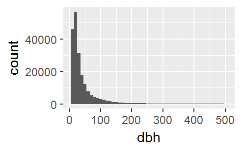 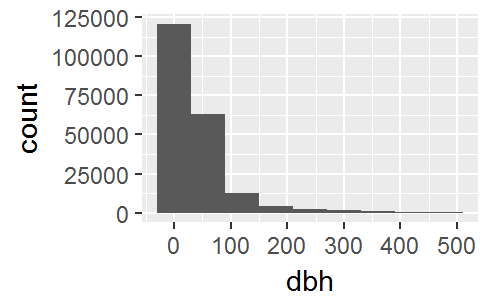
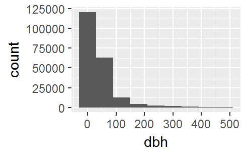
To overlay multiple histograms in the same plot, geom_freqpoly() may produce clearer plots than geom_histogram() because it is easier to understand overlying lines than bars.
# Make n groups with ~ numbers of observations with `ggplot2::cut_number()`
small_cut_number <- mutate(small_dbh, equal_n = cut_number(dbh, n = 5))
p <- ggplot(data = small_cut_number, aes(x = dbh, color = equal_n)) +
# use available space on plot area (defult plots legend outside)
theme(
legend.position = c(.95, .95),
legend.justification = c("right", "top")
)
# Left
p + geom_histogram()
#> `stat_bin()` using `bins = 30`. Pick better value with `binwidth`.
# Right
p + geom_freqpoly()
#> `stat_bin()` using `bins = 30`. Pick better value with `binwidth`.For multiple histograms, lines are easier to understand than bars.
Typical and rare Values
In both bar charts and histograms, tall and short bars let us explore common and less-common values. For example, we could ask:
- Which values are the most common? Why?
- Which values are rare? Why? Does that match your expectations?
- Can you see any unusual patterns? What might explain them?
The later two plots give a good estimate of what tree diameters are most common. You can compute the same count manually, by cutting the variable dbh with ggplot2::cut_width() and then counting the unique pieces with dplyr::count():
small_cut_width <- small_dbh %>%
dplyr::mutate(dbh_cut = ggplot2::cut_width(dbh, width = useful_barwidth))
small_cut_width %>%
dplyr::count(dbh_cut, sort = TRUE)
#> # A tibble: 18 x 2
#> dbh_cut n
#> <fctr> <int>
#> 1 (15,45] 106249
#> 2 [-15,15] 46024
#> 3 (45,75] 25191
#> 4 (75,105] 10867
#> 5 (105,135] 5998
#> 6 (135,165] 3173
#> # ... with 12 more rowsAlthough the most common trees are those which diameter (dbh) is between 15 mm and 45 mm, smaller trees are generally more common than bigger trees, which we already learned from previous plots.
Clustered values
In this section we will focus on the largest trees; later we will explore all trees, including medium-size ones.
largest_dbh <- bci12full7 %>%
filter(dbh > 2000)Clusters of similar values suggest that subgroups exist in your data. To understand the subgroups, ask:
- How are the observations within each cluster similar to each other?
- How are the observations in separate clusters different from each other?
- How can you explain or describe the clusters?
- Why might the appearance of clusters be misleading?
The clustering, however, may be an artifact of the chosen bar-width:
p <- ggplot(largest_dbh, aes(dbh))
# Left: apparent clustering
p + geom_histogram(binwidth = useful_barwidth)
# Right: clusters are less apparent with bars twice as wide
p + geom_histogram(binwidth = useful_barwidth * 2)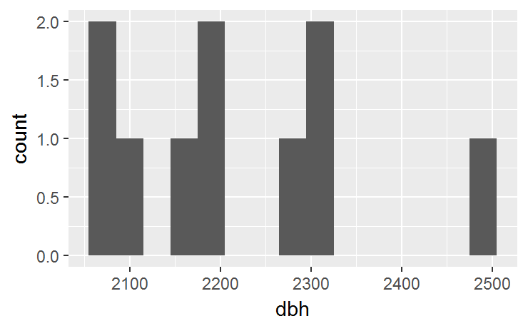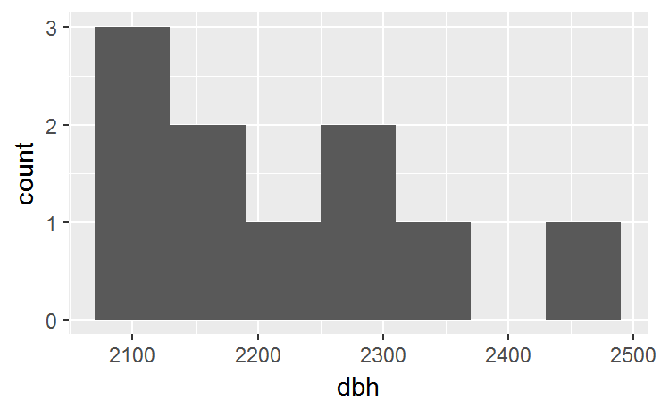
Unusual values
(From R for Data Science, except examples and some text.)
In this section we will work with the entire bci12full7 data set.
Outliers are observations that are unusual; data points that don’t seem to fit the pattern. Sometimes outliers are data entry errors; other times outliers suggest important new science. When you have a lot of data, outliers are sometimes difficult to see in a histogram.
For example, take the distribution of the dbh variable of the bci12full7 data set. The only evidence of outliers is the unusually wide limits on the x-axis (stress mine).
p <- ggplot(bci12full7, aes(x = dbh)) +
geom_histogram(binwidth = useful_barwidth)
p
#> Warning: Removed 187399 rows containing non-finite values (stat_bin).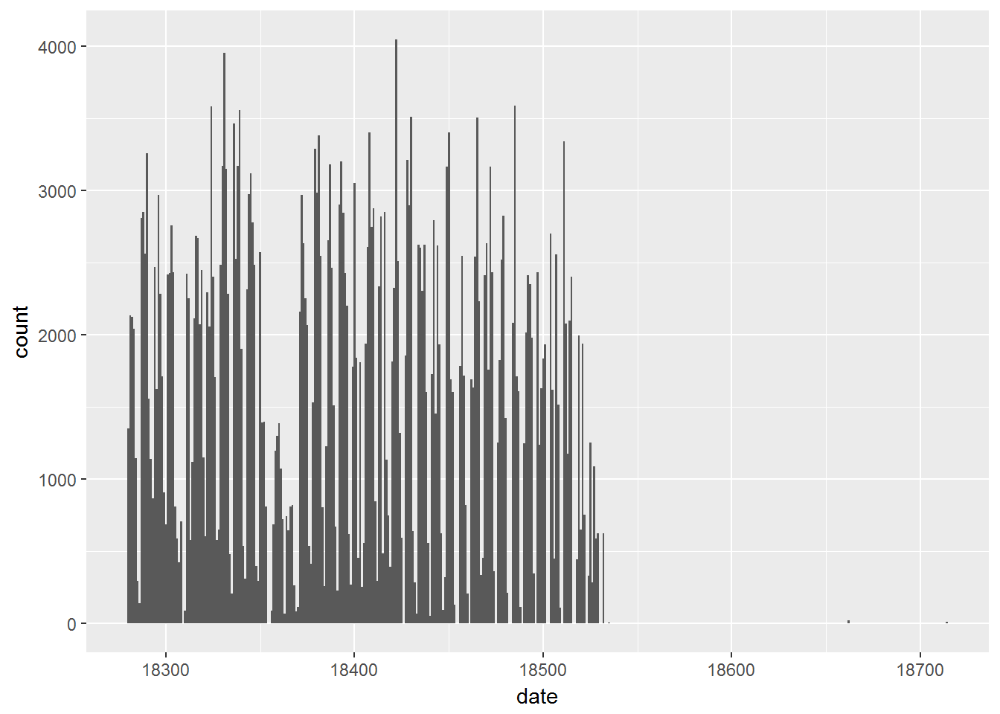
There are so many observations in the common bins that the rare bins are so short that you can’t see them . To make it easy to see the unusual values, we need to zoom to small values of the y-axis with coord_cartesian():
p + coord_cartesian(ylim = c(0, 50))
#> Warning: Removed 187399 rows containing non-finite values (stat_bin).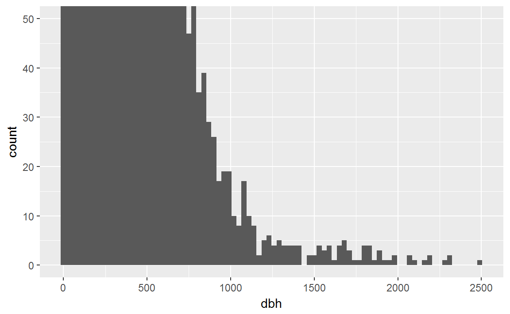
coord_cartesian() also has an xlim() argument for when you need to zoom into the x-axis. ggplot2 also has xlim() and ylim() functions that work slightly differently: they throw away the data outside the limits.
This allows us to see that dbh values over 2000 are unusual. We pluck them out with dplyr::filter() and select a subset of informative variables:
unusual_trees <- bci12full7 %>%
filter(dbh > 2000) %>%
dplyr::select(treeID, ExactDate, status, gx, gy, dbh) %>%
dplyr::arrange(dbh)
unusual_trees
#> # A tibble: 10 x 6
#> treeID ExactDate status gx gy dbh
#> <int> <chr> <chr> <dbl> <dbl> <dbl>
#> 1 897 2011-03-28 A 884 197.7 2080
#> 2 5169 2010-08-07 A 389 166.9 2085
#> 3 3634 2010-08-23 A 577 22.1 2103
#> 4 3608 2010-08-23 A 589 60.3 2172
#> 5 2564 2010-08-30 A 716 27.2 2180
#> 6 1160 2011-03-28 A 861 39.9 2200
#> # ... with 4 more rowsYou could plot the unusual trees to see where they are located. A number of the unusually large trees seem to be on the edge of the plot, where gy values are lower than 100 (left plot below). This information helps us to filter those edge trees selectively (right plot below).
# Left
sample_100 <- bci12full7 %>%
dplyr::sample_n(100) # for faster analysis and to avoid overplotting
ggplot(sample_100, aes(gx, gy)) +
# plot a few points for reference with only 1/10 opacity (less distracting)
geom_point(alpha = 1/10) +
# highlight location of unusual trees in the plot
geom_point(data = unusual_trees, colour = "red")
# Right
edge_trees <- unusual_trees %>%
filter(gy < 100)
ggplot2::last_plot() +
geom_point(data = edge_trees, size = 3, shape = 1) # highlight edge trees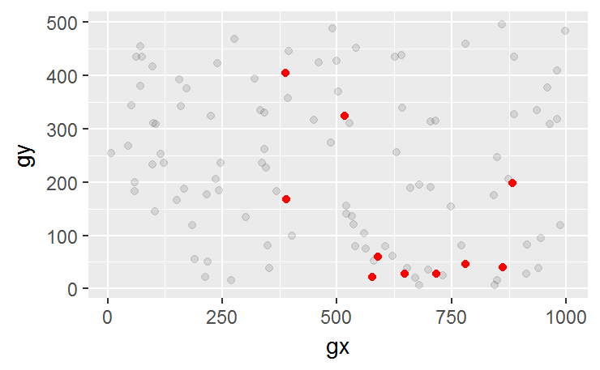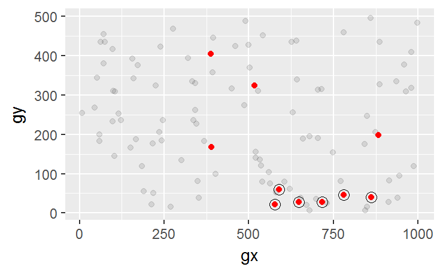
Now you can decide what to do with the unusual and edge trees.
It’s good practice to repeat your analysis with and without the outliers. If they have minimal effect on the results, and you can’t figure out why they’re there, it’s reasonable to replace them with missing values, and move on. However, if they have a substantial effect on your results, you shouldn’t drop them without justification. You’ll need to figure out what caused them (e.g. a data entry error) and disclose that you removed them in your write-up.
Missing Values
(From R for Data Science, except examples and some text.)
If you’ve encountered unusual values in your data set, and simply want to move on to the rest of your analysis, you have two options.
-
Drop the entire row with the strange values:
are_usual <- !bci12full7$treeID %in% unusual_trees$treeID usual_trees <- filter(bci12full7, are_usual) # Confirm data set of usual trees has less rows than full data set. nrow(bci12full7) #> [1] 394658 nrow(usual_trees) #> [1] 394648I don’t recommend this option because just because one measurement is invalid, doesn’t mean all the measurements are. Additionally, if you have low quality data, by time that you’ve applied this approach to every variable you might find that you don’t have any data left!
-
Instead, I recommend replacing the unusual values with missing values. The easiest way to do this is to use
mutate()to replace the variable with a modified copy. You can use theifelse()function to replace unusual values withNA:are_unusual <- !are_usual with_unusual_made_NA <- bci12full7 %>% mutate(dbh = ifelse(are_unusual, NA_real_, dbh))
ifelse() has three arguments. The first argument test should be a logical vector. The result will contain the value of the second argument, yes, when test is TRUE, and the value of the third argument, no, when it is false.
Alternatively to ifelse, use dplyr::case_when().
case_when()is particularly useful inside mutate when you want to create a new variable that relies on a complex combination of existing variables
–?dplyr::case_when
# Confirm no rows have been removed,
nrow(bci12full7)
#> [1] 394658
nrow(with_unusual_made_NA)
#> [1] 394658
# but dbh of unusual trees is NA
unusual_only <- with_unusual_made_NA %>%
filter(are_unusual) %>%
select(dbh, treeID)
unusual_only
#> # A tibble: 10 x 2
#> dbh treeID
#> <dbl> <int>
#> 1 NA 897
#> 2 NA 1160
#> 3 NA 1903
#> 4 NA 2564
#> 5 NA 2935
#> 6 NA 3608
#> # ... with 4 more rowsLike R, ggplot2 subscribes to the philosophy that missing values should never silently go missing. It’s not obvious where you should plot missing values, so ggplot2 doesn’t include them in the plot, but it does warn that they’ve been removed (left plot below). To suppress that warning, set na.rm = TRUE (right plot below).
# Left: don't remove NAs and get a warning on the console
ggplot(unusual_only, aes(dbh)) +
geom_histogram(binwidth = useful_barwidth) +
labs(title = "Expect empty plot but get a warning")
#> Warning: Removed 10 rows containing non-finite values (stat_bin).
# Right: NAs explicitely removed in geom_histogram(), so no warning
ggplot(unusual_only, aes(dbh)) +
geom_histogram(binwidth = useful_barwidth, na.rm = TRUE) +
labs(title = "Expect empty plot but no warning")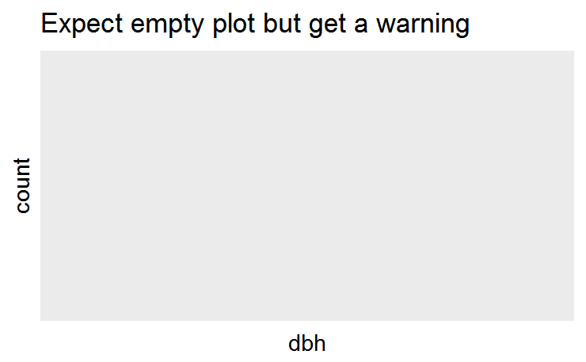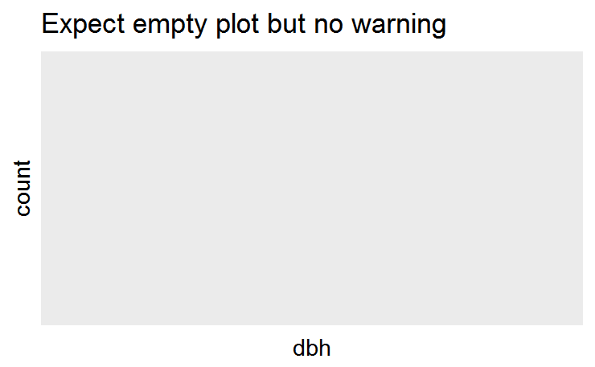
Other times you want to understand what makes observations with missing values different to observations with recorded values.
For example, in bci::bci12full7, some missing values in the dbh variable correspond to alive trees. So you might want to compare the DFstatus for trees with missing and non-missing values of dbh. You can do this by making a new variable with is.na().
missing_dbh_trees <- bci12full7 %>%
mutate(missing_dbh = is.na(dbh))
ggplot(missing_dbh_trees) +
geom_bar(aes(DFstatus, fill = missing_dbh))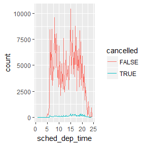
To know why dbh is missing in alive trees, you may want to further explore all variables with a single unique value when dbh = NA and DFstatus = "alive":
has_single_unique_value <- function(x) {dplyr::n_distinct(x) == 1}
missing_dbh_trees %>%
filter(missing_dbh == TRUE, DFstatus == "alive") %>%
select_if(has_single_unique_value) %>%
unique()
#> # A tibble: 1 x 9
#> CensusID dbh pom hom DFstatus nostems status agb missing_dbh
#> <int> <dbl> <chr> <dbl> <chr> <dbl> <chr> <dbl> <lgl>
#> 1 171 NA <NA> NA alive 1 A 0 TRUECovariation
(From R for Data Science, except examples and some text.)
If variation describes the behavior within a variable, co-variation describes the behavior between variables. Covariation is the tendency for the values of two or more variables to vary together in a related way. The best way to spot co-variation is to visualize the relationship between two or more variables. How you do that should again depend on the type of variables involved.
A categorical and continuous variable
It’s common to want to explore the distribution of a continuous variable broken down by a categorical variable. The default appearance of geom_freqpoly() is not that useful for that sort of comparison because the height is given by the count. That means if one of the groups is much smaller than the others, it’s hard to see the differences in shape. For example, let’s explore how stem diameter (dbh) varies with species (sp):
# The data set has too many species; choosing just a few to make this point
a_few_species <- bci12full7 %>%
select(sp) %>%
unique() %>%
pull() %>%
.[1:5]
data_few_sp <- bci12full7 %>%
filter(sp %in% a_few_species)
ggplot(data_few_sp, aes(dbh)) +
geom_freqpoly(aes(color = sp))
#> `stat_bin()` using `bins = 30`. Pick better value with `binwidth`.
#> Warning: Removed 47617 rows containing non-finite values (stat_bin).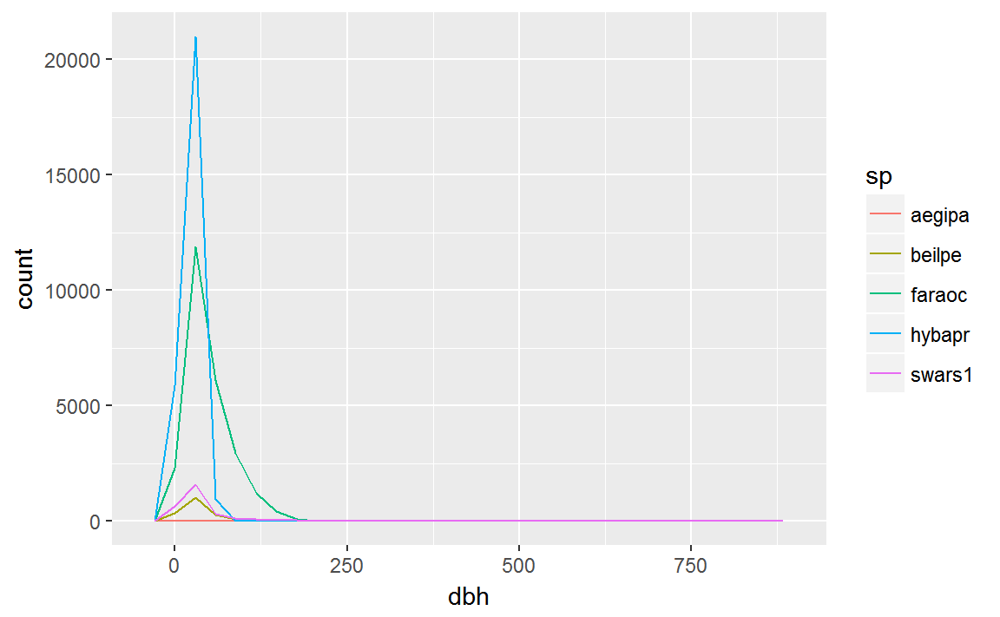
It’s hard to see the difference in distribution because the overall counts differ so much:
library(forcats) # tools for dealing with categorical variables
ggplot(data_few_sp) +
# order `sp` from high to low frequency
geom_bar(mapping = aes(x = forcats::fct_infreq(sp)))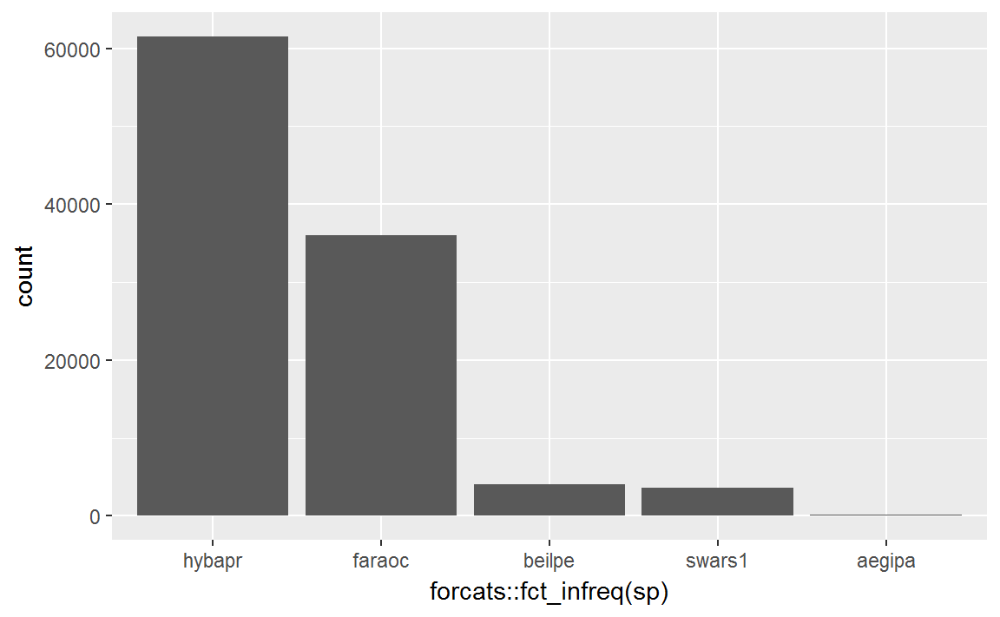
To make the comparison easier we need to swap what is displayed on the y-axis. Instead of displaying count, we’ll display density, which is the count standardized so that the area under each frequency polygon is one.
ggplot(data_few_sp, aes(x= dbh, y = ..density..)) +
geom_freqpoly(aes(color = sp))
#> `stat_bin()` using `bins = 30`. Pick better value with `binwidth`.
#> Warning: Removed 47617 rows containing non-finite values (stat_bin).
Another alternative to display the distribution of a continuous variable broken down by a categorical variable is the boxplot. A boxplot is a type of visual shorthand for a distribution of values that is popular among statisticians. Each boxplot consists of:
A box that stretches from the 25th percentile of the distribution to the 75th percentile, a distance known as the interquartile range (IQR). In the middle of the box is a line that displays the median, i.e. 50th percentile, of the distribution. These three lines give you a sense of the spread of the distribution and whether or not the distribution is symmetric about the median or skewed to one side.
Visual points that display observations that fall more than 1.5 times the IQR from either edge of the box. These outlying points are unusual so are plotted individually.
A line (or whisker) that extends from each end of the box and goes to the
farthest non-outlier point in the distribution.

Let’s take a look at the distribution of tree diameter (dbh) by species (sp) using geom_boxplot():
ggplot(data_few_sp, aes(sp, dbh)) +
geom_boxplot()
#> Warning: Removed 47617 rows containing non-finite values (stat_boxplot).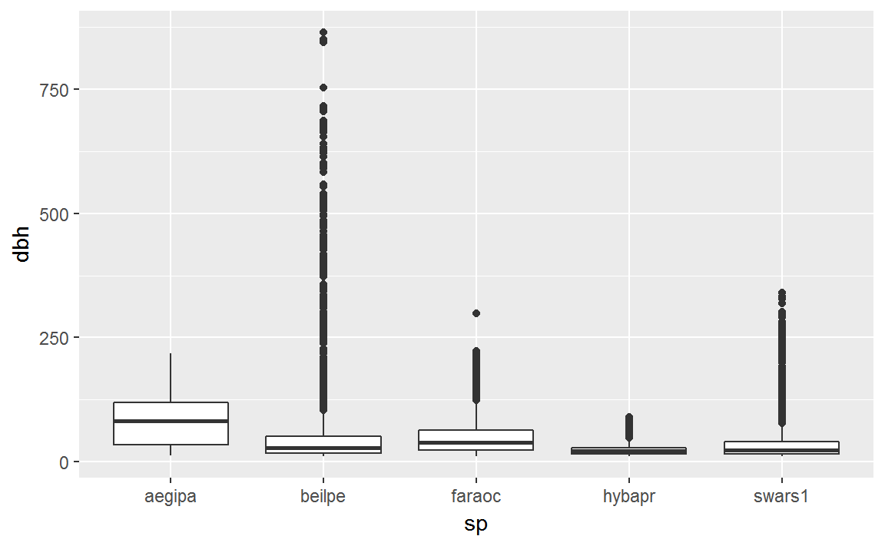
We see much less information about the distribution, but the boxplots are much more compact so we can more easily compare them (and fit more on one plot).
Above we ordered the variable sp by its frequency. But now, to make the trend easier to see, we can reorder sp based on the median value of dbh. One way to do that is with the reorder() function.
data_few_sp <- data_few_sp %>%
mutate(sp = reorder(sp, dbh, FUN = median, na.rm = TRUE))
ggplot(data_few_sp, aes(sp, dbh)) +
geom_boxplot()
#> Warning: Removed 47617 rows containing non-finite values (stat_boxplot).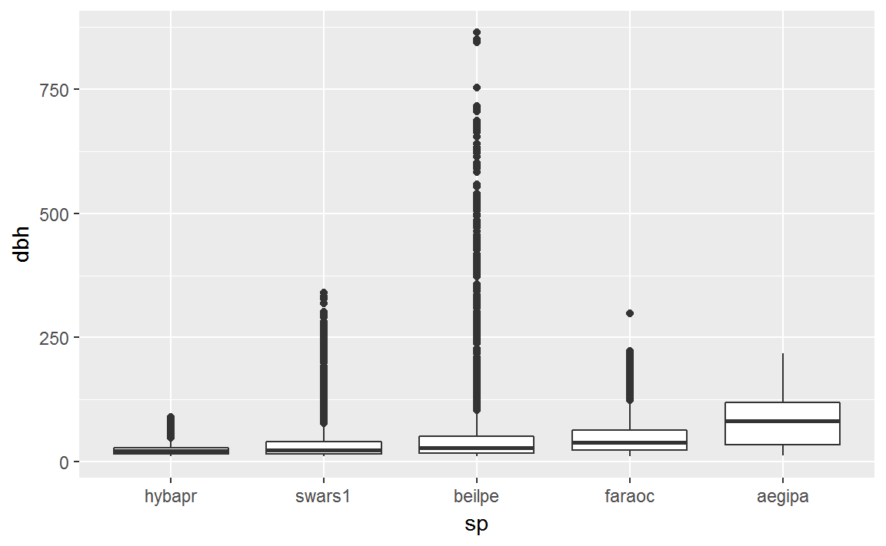
If you have long variable names, geom_boxplot() will work better if you flip it 90°. You can do that with coord_flip() (left plot below), or with ggstance::geom_boxploth() and swapping x and y mappings (right plot below):
# install.packages("ggstance")
library(ggstance)
#>
#> Attaching package: 'ggstance'
#> The following objects are masked from 'package:ggplot2':
#>
#> geom_errorbarh, GeomErrorbarh
# Left
ggplot2::last_plot() +
coord_flip()
#> Warning: Removed 47617 rows containing non-finite values (stat_boxplot).
# Right
ggplot(data_few_sp) +
ggstance::geom_boxploth(aes(x = dbh, y = sp)) # swap x, y; compare to above
#> Warning: Removed 47617 rows containing non-finite values (stat_boxploth).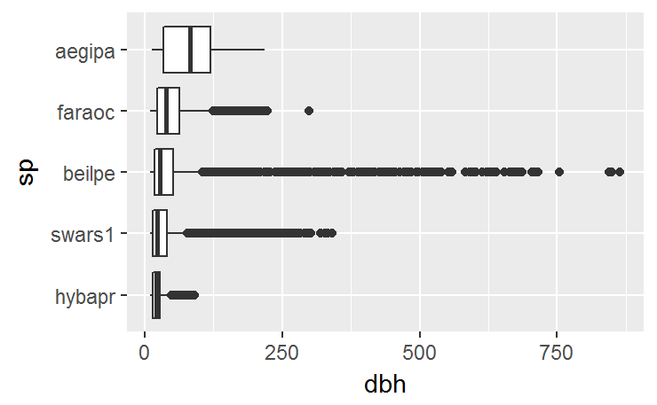
Alternatives
One problem with boxplots is that they were developed in an era of much smaller data sets and tend to display a prohibitively large number of “outlying values”. One approach to remedy this problem is the letter value plot.
# install.packages("lvplot")
library(lvplot)
ggplot(data_few_sp, aes(sp, dbh)) +
lvplot::geom_lv()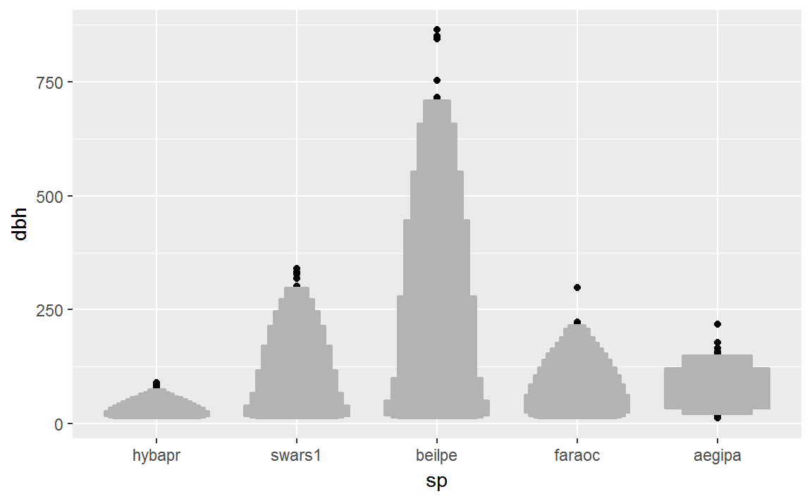
Compare and contrast geom_violin() with a faceted geom_histogram(), or a colored geom_freqpoly(). What are the pros and cons of each method?
# Left
ggplot(data_few_sp, aes(sp, dbh)) +
geom_violin()
#> Warning: Removed 47617 rows containing non-finite values (stat_ydensity).
# Right
ggplot(data_few_sp, aes(dbh)) +
geom_histogram() +
facet_wrap(~sp)
#> `stat_bin()` using `bins = 30`. Pick better value with `binwidth`.
#> Warning: Removed 47617 rows containing non-finite values (stat_bin).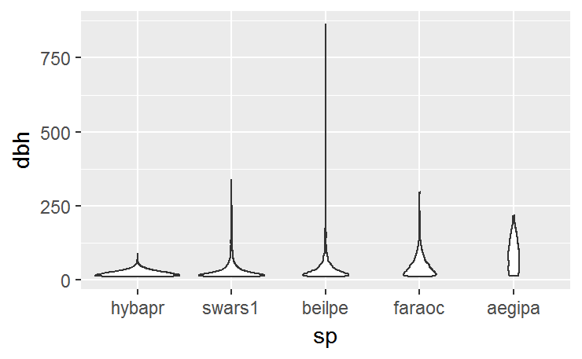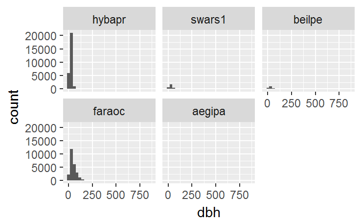
If you have a small data set, it’s sometimes useful to use geom_jitter() to see the relationship between a continuous and categorical variable. The ggbeeswarm package provides a number of methods similar to geom_jitter().
# install.packages("ggbeeswarm")
library(ggbeeswarm)
small_dataset <- data_few_sp %>%
group_by(sp) %>%
sample_n(50)
p <- ggplot(small_dataset, aes(sp, dbh))
# Left
p + geom_point()
#> Warning: Removed 97 rows containing missing values (geom_point).
# Center
p + geom_jitter()
#> Warning: Removed 97 rows containing missing values (geom_point).
# Right
p + ggbeeswarm::geom_quasirandom()
#> Warning: Removed 97 rows containing missing values (position_quasirandom).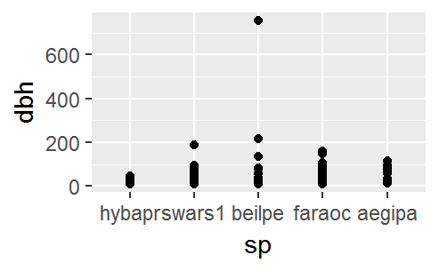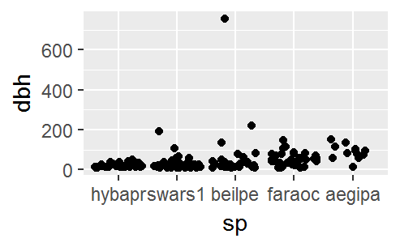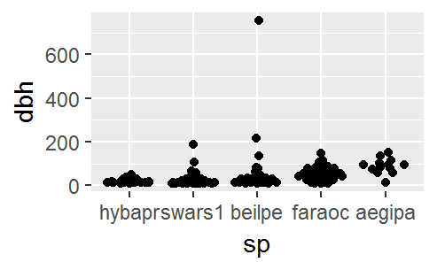
Two categorical variables
To visualize the co-variation between categorical variables, you’ll need to count the number of observations for each combination. One way to do that is to rely on the built-in geom_count(). The size of each circle in the plot displays how many observations occurred at each combination of values (left plot below). Co-variation will appear as a strong correlation between specific x values and specific y values.
# Simple count
ggplot(data_few_sp) +
geom_count(aes(x = sp, y = DFstatus))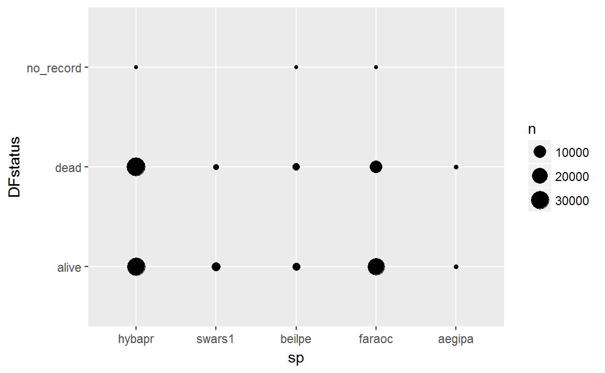
To more clearly show the distribution of DFstatus within sp (or sp within DFstatus) you can map bubble size to a proportion calculated over sp (or over DFstatus):
# Proportion; columns sum to 1.
ggplot(data_few_sp, aes(x = sp, y = DFstatus)) +
geom_count(aes(size = ..prop.., group = sp)) +
scale_size_area(max_size = 10)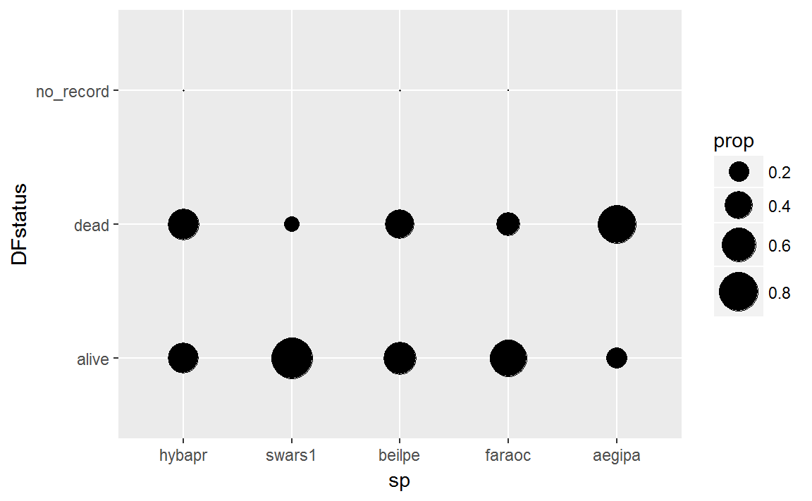
Another approach is to compute the count with dplyr:
few_spp_n <- data_few_sp %>%
count(sp, DFstatus)
few_spp_n
#> # A tibble: 13 x 3
#> sp DFstatus n
#> <fctr> <chr> <int>
#> 1 hybapr alive 30130
#> 2 hybapr dead 31409
#> 3 hybapr no_record 8
#> 4 swars1 alive 3189
#> 5 swars1 dead 382
#> 6 beilpe alive 2252
#> # ... with 7 more rowsThen visualize with geom_tile() and the fill aesthetic:
ggplot(few_spp_n, aes(sp, DFstatus)) +
geom_tile(aes(fill = n))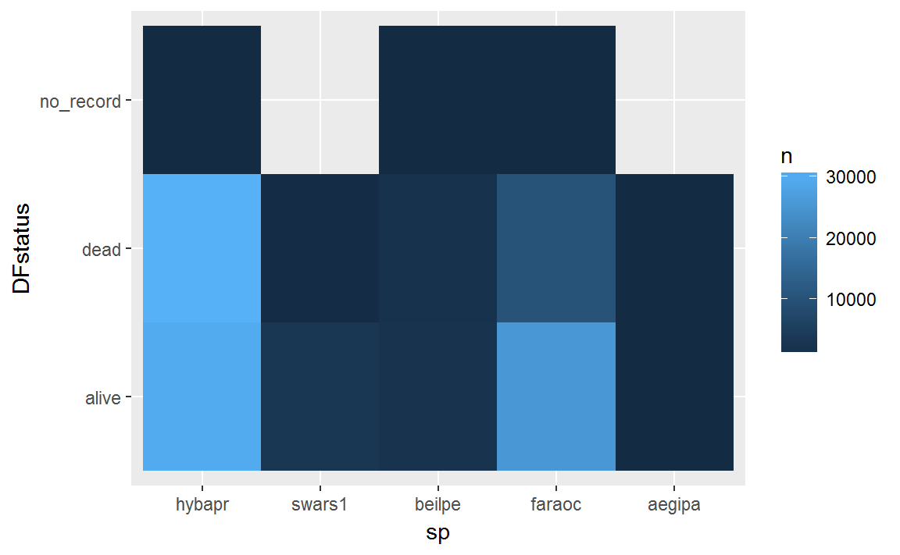
Two continuous variables
You’ve already seen one great way to visualize the co-variation between two continuous variables: draw a scatterplot with geom_point(). You can see co-variation as a pattern in the points. For example, you can see an exponential relationship between the tree diameter (dbh) and the above ground biomass (agb).
large_dataset <- bci12full7 %>%
filter(dbh < 400) %>%
sample_n(100000)
p <- ggplot(large_dataset, aes(dbh, agb))
p + geom_point()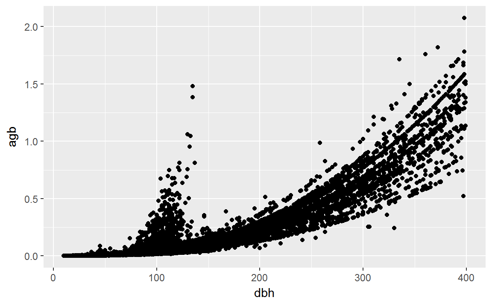
Scatterplots become less useful as the size of your data set grows, because points begin to overplot, and pile up into areas of uniform black (as above). You’ve already seen one way to fix the problem: using the alpha aesthetic to add transparency.
p + geom_point(alpha = 1 / 50)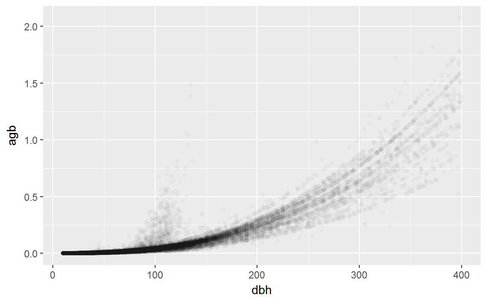
But using transparency can be challenging for very large data sets. Another solution is to use bin. Previously you used geom_histogram() and geom_freqpoly() to bin in one dimension. Now you’ll learn how to use geom_bin2d() and geom_hex() to bin in two dimensions.
geom_bin2d() and geom_hex() divide the coordinate plane into 2d bins and then use a fill color to display how many points fall into each bin. geom_bin2d() creates rectangular bins. geom_hex() creates hexagonal bins. You will need to install the hexbin package to use geom_hex().
# Left
p + geom_bin2d()
# Right
p + geom_hex()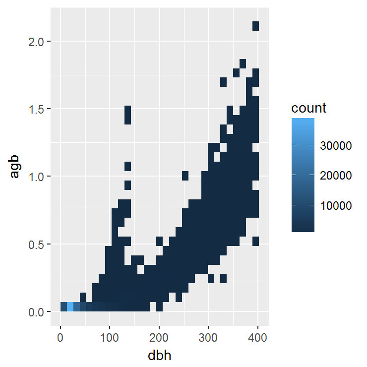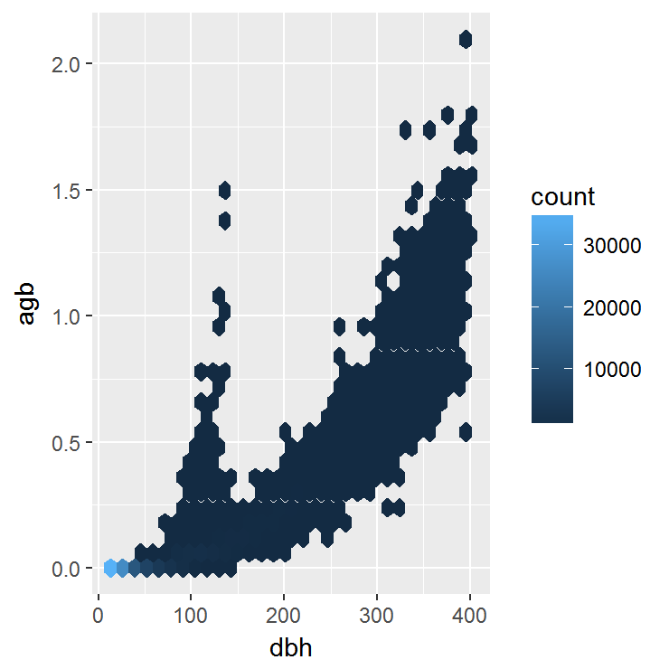
Another option is to bin one continuous variable so it acts like a categorical variable. Then you can use one of the techniques for visualizing the combination of a categorical and a continuous variable that you learned about. For example, you could bin dbh and then for each group, display a boxplot:
p <- ggplot(large_dataset, aes(dbh, agb))
p + geom_boxplot(aes(group = cut_width(dbh, useful_barwidth)))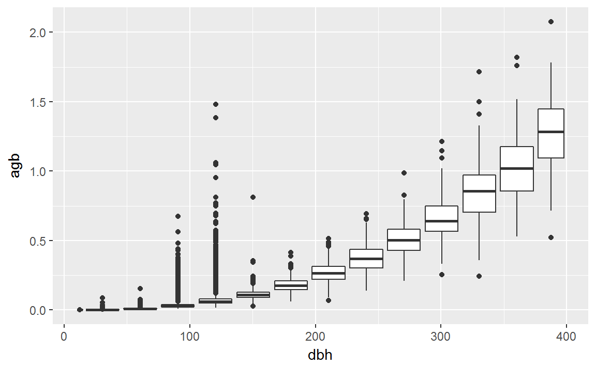
cut_width(x, width), as used above, divides x into bins of width width. By default, boxplots look roughly the same (apart from number of outliers) regardless of how many observations there are, so it’s difficult to tell that each boxplot summarizes a different number of points. One way to show that is to make the width of the boxplot proportional to the number of points with varwidth = TRUE.
Another approach is to display approximately the same number of points in each bin. That’s the job of cut_number():
p + geom_boxplot(aes(group = cut_number(dbh, 20)))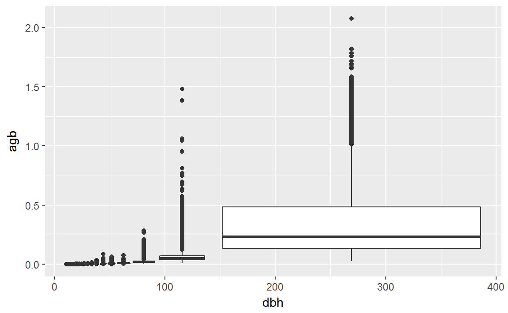
Patterns and models
Patterns in your data provide clues about relationships. If a systematic relationship exists between two variables it will appear as a pattern in the data. If you spot a pattern, ask yourself:
Could this pattern be due to coincidence (i.e. random chance)?
How can you describe the relationship implied by the pattern?
How strong is the relationship implied by the pattern?
What other variables might affect the relationship?
Does the relationship change if you look at individual subgroups of the data?
A scatterplot of tree diameter (dbh) versus above ground biomass (agb) shows a pattern: larger tree diameters are associated with larger above ground biomass. The scatterplot also displays strangely high values of agb, which appear to correspond with dbh values ranging approximately 80-140.
large_strange <- large_dataset %>% filter(dbh > 80 & dbh < 140)
ggplot(data = large_dataset, aes(x = dbh, y = agb)) +
geom_point() +
geom_point(data = large_strange, color = "red")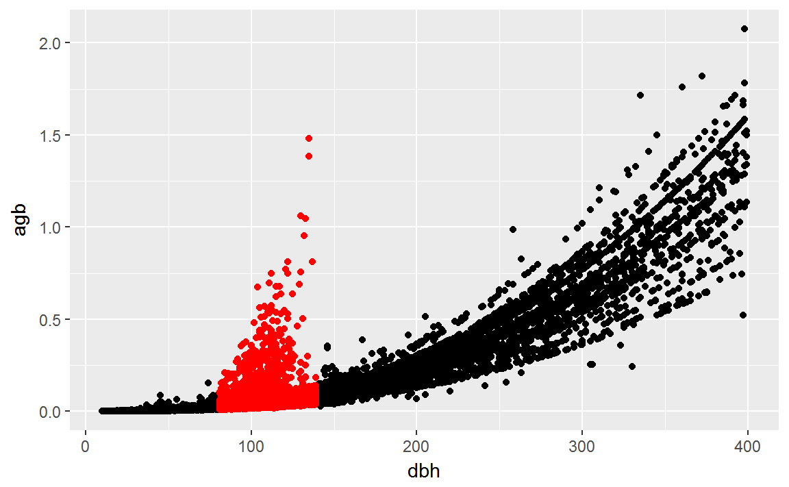
Patterns provide one of the most useful tools for data scientists because they reveal co-variation. If you think of variation as a phenomenon that creates uncertainty, co-variation is a phenomenon that reduces it. If two variables co-vary, you can use the values of one variable to make better predictions about the values of the second. If the co-variation is due to a causal relationship (a special case), then you can use the value of one variable to control the value of the second.
Models are a tool for extracting patterns out of data. For example, consider the large_dataset data; dbh and agb are tightly related. It’s possible to use a model to remove the very strong relationship between dbh and agb so we can explore the subtleties that remain. The following code fits a model that predicts agb from dbh and then computes the residuals (the difference between the predicted value and the actual value). The residuals give us a view of the agb of a tree, once the effect of dbh has been removed.
library(modelr)
mod <- lm(log(agb) ~ log(dbh), data = large_dataset)
resid_added <- large_dataset %>%
add_residuals(mod) %>%
mutate(resid = exp(resid))
# Left
resid_strange <- resid_added %>% filter(dbh > 80 & dbh < 140)
p <- ggplot(data = resid_added, aes(x = dbh, y = resid)) +
geom_point() +
geom_point(data = resid_strange, color = "red")
p
# Right
resid_strange_too <- resid_added %>% filter(dbh < 80, resid > 5)
p + geom_point(data = resid_strange_too, size = 3, colour = "red", shape = 1)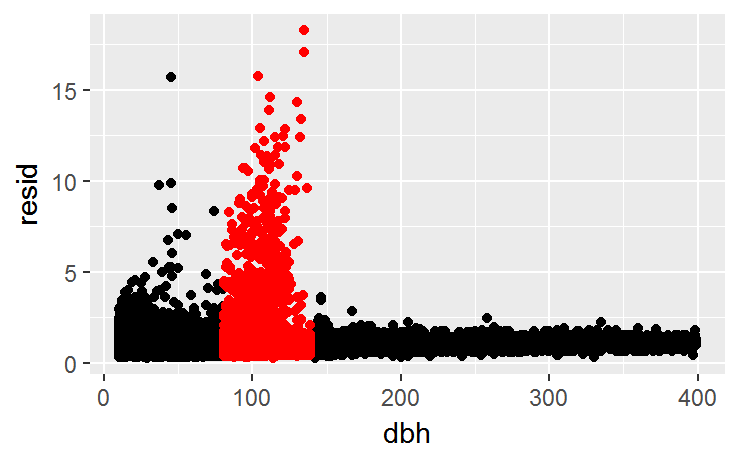
Once you’ve removed the strong relationship between dbh and agb, you can see some additional strange measurements.